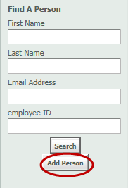
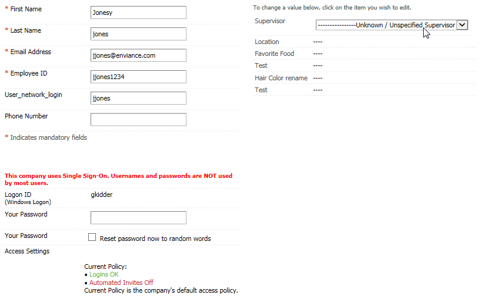

In most cases, users are added to the OES system via a data import file (HR data feed). However, you can also add users to the OES system manually. Contractors typically may not be included in the regularly scheduled HR feed and must be manually entered into the OES system by a company OES Administrator.
Prior to adding a new user to OES, you should first confirm that an account does not already exist for the user. Use the Find A Person function and search for the user's name, email address, or employee ID.
Note: Depending on your OES Role, you may only be able to view users assigned to your location, country, department, or other determining attribute.
Once you confirm the user does not already have an account in OES, you can add the user manually to OES if required.
To add a new user account:
From the Administration Home page, select Add Person from the left menu.

If your previous search did not yield any results, any search criteria you have entered will carry over when you select Add Person.
Complete the fields in the HR Profile. Required fields are marked with a red asterisk.
Other company-specific fields are shown on the right. To enter a new value, click on '----'. To change a current value, click on the value to edit.
